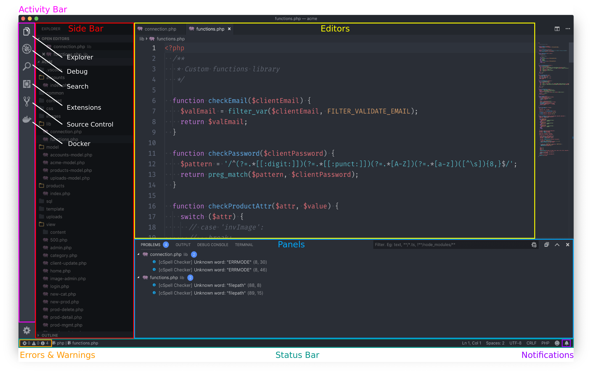
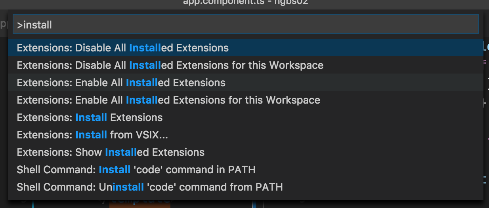
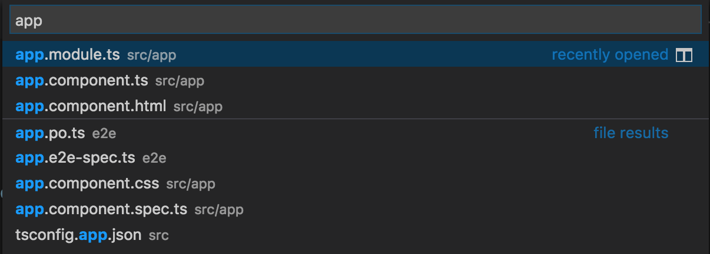

Visual Studio Code (VS Code)
Introduction
Visual Studio Code is a code editor redefined and optimized for building and debugging modern web and cloud applications.
For CIT 336 Section 5, we will be using Visual Studio Code instead of Netbeans to write PHP. When Netbeans is mentioned in the text or videos, you should try to apply the instructions to Visual Studio Code. If the steps or instructions are not applicable, ignore them. The significant difference will be how you run your PHP code. You will open your browser and go to http://localhost/[BYU-I username]-acme
Why are we switching you may ask; mostly because Netbeans is overkill for our needs. I have had several students whose computer was severely affected while running Netbeans. Netbeans is an IDE (integrated development environment) making it memory intensive and slow whereas Visual Studio Code is a text editor requiring little computer resources and a smaller learning curve.
This document covers three topics:
Installation on Windows
Video Demonstration
This video demonstrates downloading and installing Visual Studio Code for Windows. The demonstration is of an older version of Visual Studio Code so there may be some slight variation to the steps. The video should automatically stop at 1:48.
Steps
- Open a web browser and enter code.visualstudio.com
- Once loaded, click the large green "Download" button on the left to download the installer.
- After the download is complete, launch the installer.
- If presented with the security warning(s) asking if it is OK for the software to change your PC?, proceed by clicking "Yes".
- Click "Next."
- Accept the license agreement and click "Next."
- On the following screens click "Next."
- When you reach the screen with the "Install" button, click it.
- When done, click "Finish" to close the installer.
Installation on Mac
Video Demonstration
This video demonstrates downloading and installing Visual Studio Code for Mac
Steps
- Open a web browser and enter code.visualstudio.com
- Once loaded, click the large green "Download" button on the left.
- After the download is complete, open the ZIP file.
- The ZIP file contains the "Visual Studio Code" program.
- Drag and drop the program to "Applications."
Overview
Welcome Screen
You can open recent folders, settings, etc.Activity Bar
Explorer - The Explorer area is where you manage the files and subfolders of the currently opened folder.
Search - The Search area is where you can search for specific text throughout the open project or open files.
Debug - We will not be using this feature of VS Code.
Extensions - We will not be using this feature of VS Code.
Source Control - The Source Control area is where we will be syncing our code changes with GitLab.
Docker - We will not be using this feature of VS Code.
Side Bar
Shows the view you selected in the Activity Bar.Editor
The most important part of the application is the Editor area on the right side. Here you can open and edit your code files. It’s possible to open up to three files side-by-side.Status Bar
The bar at the bottom of the application gives you access to information about the opened project and the open files.Errors and Warnings - Lists the number of errors and warnings currently found in the open project. Clicking it will open the Problems panel which lists the errors and warnings.
Notification - A bell icon will appear when new notifications are available. Click it to view them.
Panels
Here you can choose from four different panel. You need only to concern yourself with the Problems view.Command Palette
Use Ctrl+Shift+P on Windows or ⌘+Shift+P on Mac to open the palette and start typing the command you want to run. All functions of Visual Studio Code can be accessed here.
Quick File Navigation
Use Ctrl+P on Windows or ⌘+P on Mac to open the file search dialog. Start typing and you’ll get back a result list with matching file names.